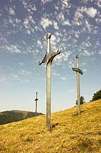

<b>დიდგორის ბრძოლა</b>
<i>დიდგორის ბრძოლა მოხდა 1121წლის 12 აგვისტოს</i>
<u>ქართველთა ბრძოლა დავით IV აღმაშენებლის მეთაურობით თურქ-სელჩუკთა კოალიციური ლაშქრის წინააღმდეგ დიდგორის ველზე (მანგლისის მახლობლად, თბილისის მისადგომებთან)</u>


